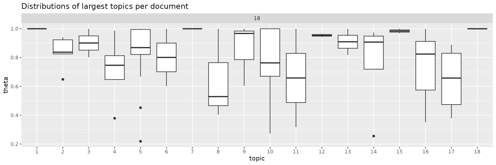
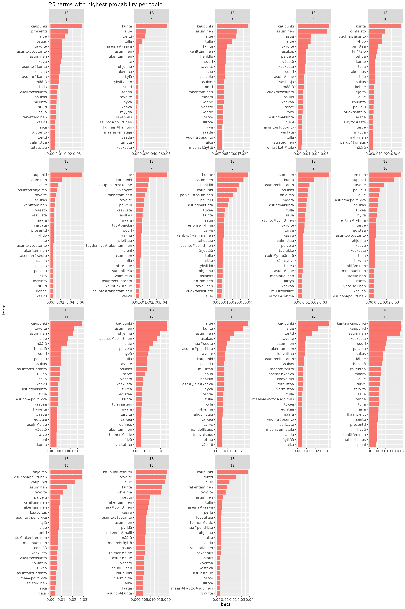

Topic modeling with latent Dirichlet allocation (LDA).
library(rfintext)
library(quanteda)
library(tidytext)
library(topicmodels) # LDA
library(topicdoc) # Coherence score
library(dplyr) # Tidyverse friends
library(tidyr) # Tidyverse friends
library(tibble)
library(forcats) # Tidyverse friends
library(purrr) # Tidyverse friends
library(tidyr) # Tidyverse friends
library(ggplot2) # Tidyverse friends
library(cowplot) # Multiple plots made easy
library(future) # Parallel processing back-end
library(furrr) # Parallel processing front-end with future_ functions
plan(multisession, workers = availableCores(logical = FALSE) - 1) # Utilize multiple cores on time consuming tasks.You know already how to pre process and convert to document term matrix:
dtm <- aspol |>
preprocess_corpus(kunta) |>
count(kunta, LEMMA) |>
cast_dfm(kunta, LEMMA, n) # n is default name from dplyr::count()
dtm
#> Document-feature matrix of: 68 documents, 3,038 features (76.63% sparse) and 0 docvars.
#> features
#> docs A#talo Vapaa#aika aiheuttaa aika aika#väli ajatella alhainen alku alku#peräinen alku#puoli alue antaa arava#laina arava#rajoitus arvioida asettaa asia asiakas asian#mukainen asua
#> Enontekiö 3 1 3 7 1 1 1 1 1 1 17 3 1 1 1 2 3 3 1 5
#> Espoo 0 0 1 18 3 0 4 1 1 0 108 2 0 0 9 10 3 1 0 11
#> Eura 0 0 1 5 0 0 1 0 0 0 10 1 0 0 3 1 1 6 0 7
#> Hartola 0 1 2 5 0 0 0 0 0 0 4 0 0 0 3 0 0 0 0 6
#> Hattula 0 0 0 6 0 0 0 1 0 0 17 1 0 0 0 1 1 0 0 3
#> Helsinki 0 0 3 46 4 0 5 12 0 1 139 7 0 0 26 13 8 6 1 57
#> Huittinen 2 0 0 13 1 5 2 0 0 0 16 3 0 0 4 3 13 4 0 8
#> Hyvinkää 0 0 0 1 0 0 0 0 0 0 0 0 0 0 1 0 0 0 0 9
#> Hämeenlinna 0 3 3 1 0 0 0 1 0 0 18 3 0 0 2 0 29 3 0 10
#> Iitti 0 0 0 0 0 0 0 1 0 0 18 5 0 0 0 1 0 0 0 0
#> Imatra 0 0 0 2 0 0 0 0 0 0 6 0 0 0 2 0 1 0 0 11
#> Inkoo 0 0 1 11 1 0 1 2 0 0 26 4 0 0 0 5 2 0 0 3
#> Joensuu 0 0 1 33 2 1 4 4 1 0 129 2 0 1 9 13 5 4 0 25
#> Juva 0 0 2 13 5 0 2 3 0 0 19 2 1 0 1 2 2 3 0 10
#> Järvenpää 0 0 0 2 0 0 0 0 0 0 7 1 0 0 0 3 2 0 0 11
#> Kaarina 0 1 2 15 6 0 0 1 0 0 55 4 0 0 4 4 3 0 0 8
#> Kalajoki 0 0 0 1 0 0 0 0 0 0 5 0 0 0 2 0 0 0 0 0
#> Kauniainen 0 0 2 14 0 1 0 1 0 1 104 4 0 0 12 6 1 3 0 17
#> Kemiönsaari 0 3 3 12 1 1 1 3 2 0 136 14 0 0 3 3 1 2 0 8
#> Kerava 0 0 2 0 0 0 0 0 0 0 13 3 0 0 2 5 0 0 0 0
#> [ reached max_ndoc ... 48 more documents, reached max_nfeat ... 3,018 more features ]Let’s get straight to business. Unsupervised classification with LDA:
LDA needs one parameter k. Finding optimal values by
evaluating coherence score.
Here we use the pre calculated data set lda_models
because running classification every time wastes time. Data set
lda_models includes mean semantic coherence calclulated
with different topic sizes and random seeds.
rfintext::lda_models
#> # A tibble: 1,400 × 3
#> K S mean_coherence
#> <int> <int> <dbl>
#> 1 3 3146759 -9.41
#> 2 3 3815732 -7.86
#> 3 3 7380638 -5.34
#> 4 3 8592264 -6.60
#> 5 3 1442259 -7.08
#> 6 3 1651155 -7.13
#> 7 3 9578454 -6.74
#> 8 3 2653332 -6.09
#> 9 3 1929552 -10.8
#> 10 3 6003578 -8.37
#> # ℹ 1,390 more rowsBelow is the code used to run the models.
Note! Following will take some time on normal computer. On cloud computing environment with 40 core machine with 177 Gb of RAM this took less than one hour. If running locally adjust number of K and S values accordingly.
# set.seed(342024)
# random_seeds <- sample.int(9999999, 10) # 3476154 5039353 8550496 7292293 5500417 7137547 6622604 9458765 3952778 8167640
#
# ptm <- proc.time()
# lda_models <- expand_grid(K = 3:30, S = random_seeds) |>
# mutate(
# # LDA models
# lda = future_map2(
# K, S, \(k, s) {
# LDA(convert(bow, to = "tm"), k = k, control = list(seed = s))
# },
# .options = furrr_options(seed = NULL)
# ),
# # Model coherence
# mean_coherence = future_map_dbl(
# lda, \(x) {
# mean(topic_coherence(x, bow))
# }
# )
# )
# proc.time() - ptm
# lda_modelsNote. Now there is function
rfintext::calculate_semantic_coherence()for the same task
p <- lda_models |>
ggplot(aes(x = K, y = mean_coherence, group = S, colour = as.factor(S), fill = as.factor(S))) +
geom_line(show.legend = FALSE) +
geom_point(show.legend = FALSE) +
scale_color_discrete() +
labs(subtitle = "LDA model coherence with different topic numbers",
x = "k (number of topics)", y = "Mean coherence")
p
Visually selecting potentially best k value/values. Coherence decline seems to stop and even slightly increase when k is over 10. Let’s pick value 15 for k since there is also less variation.
lda_models |> summarise(variation = var(mean_coherence), .by = K) |> arrange(variation)
#> # A tibble: 28 × 2
#> K variation
#> <int> <dbl>
#> 1 13 0.303
#> 2 21 0.306
#> 3 17 0.313
#> 4 16 0.314
#> 5 22 0.334
#> 6 15 0.365
#> 7 23 0.409
#> 8 14 0.411
#> 9 20 0.416
#> 10 24 0.443
#> # ℹ 18 more rows
# optimal_k <- c(5, 9, 11, 15, 20)
# optimal_k <- c(5, 7, 10, 15, 21)
# optimal_k <- c(3, 5, 15)
optimal_k <- 13
p +
geom_vline(xintercept = optimal_k, linetype='dashed', color=c('red')) +
lapply(optimal_k, function(x) {geom_text(aes(x=x+1, label=x, y=-5), colour="red", angle=90)}) +
labs(subtitle = "Optimal k values",
x = "k (number of topics)", y = "Mean coherence")
NOTE! Coherence scores can change even for smallest adjustments to pre processing pipeline. Make your mind on those first and stick to it.
Highest coherence values: 13
optimal_params <- lda_models |>
filter(K == 13) |>
slice_min(mean_coherence, n = 1)
optimal_params
#> # A tibble: 1 × 3
#> K S mean_coherence
#> <int> <int> <dbl>
#> 1 13 664224 -12.6
selected_models <- optimal_params |>
mutate(lda = map2(K, S, \(k, s) {
LDA(dtm, k = k, control = list(seed = s))
}))
selected_models
#> # A tibble: 1 × 4
#> K S mean_coherence lda
#> <int> <int> <dbl> <list>
#> 1 13 664224 -12.6 <LDA_VEM>If multiple models:
# ptm <- proc.time()
# selected_models <- optimal_params |>
# mutate(
# lda = future_map2(K, S, \(k, s) {
# LDA(convert(dtm, to = "tm"), k = k, control = list(seed = s))
# }, .options = furrr_options(seed = NULL))
# )
# proc.time() - ptm
# selected_modelsExtract beta and theta matrices with probabilities for terms per topic and documents per topic repectively.
Note!
tidytext::tidy()uses term gamma-matrix while in the research field term theta-matrix is used to describe probability distribution of topics per document. Here we rename gamma as theta. Do not get confused if at some point you come around with gamma instead of theta.
selected_models <- selected_models |>
mutate(
# Beta matrix
beta = map(
lda, \(x) tidy(x, matrix = "beta")
),
# Theta matrix (gamma)
theta = map(
lda, \(x) {
tidy(x, matrix = "gamma") |>
rename(theta = gamma)
}
)
)
selected_models
#> # A tibble: 1 × 6
#> K S mean_coherence lda beta theta
#> <int> <int> <dbl> <list> <list> <list>
#> 1 13 664224 -12.6 <LDA_VEM> <tibble [39,494 × 3]> <tibble [884 × 3]>Let’s try to calculate how much there is similarity vs difference in topics between different models.
TODO: Set probabilities of all but the top 10-40 terms to zero and calculate cosine similarity between all topic pairs.
Note. Only one model, skip following:
# selected_models <- selected_models |> filter(K==5)
# selected_models <- selected_models |> mutate(model_id = paste0(K, "_", S))
# idx <- combn(unique(selected_models$model_id), 2) # Unique pairs of K
#
# beta <- selected_models |> select(K, model_id, beta)
#
# topic_pairs <- list()
# for (i in 1:ncol(idx)) {
# sel <- beta |> filter(model_id %in% idx[, i]) # Two rows at a time
#
# # Combine pair of rows to same row
# topic_pairs[[i]] <- tibble_row(
# K1 = sel[[1,"K"]], model1 = sel[[1,"model_id"]], beta1 = sel[[1,"beta"]],
# K2 = sel[[2,"K"]], model2 = sel[[2,"model_id"]], beta2 = sel[[2,"beta"]]
# )
#
# }
# topic_pairs <- bind_rows(topic_pairs)
#
# topic_pairs <- topic_pairs |>
# mutate(
#
# topics1 = map(beta1, \(b1) {
# b1 |>
# pivot_wider(values_from = beta, names_from = topic) |>
# select(-term)
# }),
#
# topics2 = map(beta2, \(b2) {
# b2 |>
# pivot_wider(values_from = beta, names_from = topic) |>
# select(-term)
# }),
#
# r = map2(topics1, topics2, \(x1, x2) {
# cor(x1, x2)
# })#,
#
# # cossim = map2(topics1, topics2, \(x1, x2) {
# # cosine(x1, x2)
# # })
# )
# topic_pairs
# topic_pairs |> select(K1, K2, r) |>
# mutate(similarity = map(r, \(x) {
# x |>
# as_tibble(rownames = "topic1") |>
# pivot_longer(!topic1, names_to = "topic2", values_to = "r") |>
# summarise(similarity = sum(r > 0.8)/n(), .by = topic1)
# })) |>
# select(-r) |>
# unnest(similarity) |>
# summarise(mean_similarity = mean(similarity), .by = c(K1, topic1)) |>
# mutate(topic1 = as.factor(as.integer(topic1))) |>
# ggplot() +
# geom_col(aes(x = topic1, y = mean_similarity)) +
# facet_grid(~K1, scales = "free_x")
# similarity <- list()
# for (i in 1:nrow(topic_pairs)) {
# similarity[[i]] <- topic_pairs$r[[i]] |>
# as_tibble(rownames = "topic1") |>
# pivot_longer(!topic1, names_to = "topic2", values_to = "r") |>
# summarise(similarity = sum(r > 0.9)/n(), .by = topic1)
# }
# bind_rows(similarity) |>
# summarise(mean_similarity = mean(similarity), .by = topic1)
# topic_congruence <- list()
# for (i in 1:nrow(topic_pairs)) {
# topic_congruence[[i]] <- topic_pairs$r[[i]] |>
# as_tibble(rownames = "model1") |>
# pivot_longer(cols = !model1, names_to = "model2", values_to = "r") |>
# ggplot(aes(x = model1, y = model2, fill = r, label = round(r, 2))) +
# geom_tile(show.legend = FALSE) +
# geom_text() +
# scale_fill_gradient2(low = "blue", mid = "white", high = "red")
# }
# plot_grid(plotlist = topic_congruence)Next parts look ugly but hopefully they work. We take a look at correlation between topics from different models to see if different models catch up same things.
# topic_congruence <- list()
# for (i in selected_models$K) {
# topic_congruence[[paste0("model-", i)]] <- selected_models |>
# select(K, beta) |>
# unnest(beta) |>
# filter(K==i) |>
# pivot_wider(values_from = beta, names_from = topic) |>
# select(-term, -K)
# }
# topic_congruenceCompare all possible pairs of models:
# combn(selected_models$K, 2)
# topic_congruence2 <- list()
# for (idx_col in 1:ncol(combn(selected_models$K, 2))) {
# idx <- combn(selected_models$K, 2)[, idx_col]
# correlation <- cor(topic_congruence[[paste0("model-", idx[1])]], topic_congruence[[paste0("model-", idx[2])]])
# topic_congruence2[[paste0("model-", idx[1], "-", idx[2])]] <- correlation |>
# as_tibble(rownames = "topic1") |>
# pivot_longer(!topic1, names_to = "topic2", values_to = "r")
# }
# topic_congruence2 <- bind_rows(topic_congruence2, .id = "model-K")
# topic_congruence2
# topic_congruence2 |>
# mutate(`model-K`= factor(`model-K`),
# topic1 = factor(as.integer(topic1)),
# topic2 = factor(as.integer(topic2)),
# r = round(r, 2)) |>
# ggplot(aes(x = topic1, y = topic2, fill = r, label = r)) +
# geom_tile(show.legend = FALSE) +
# geom_text() +
# theme(axis.text.x = element_text(angle = 90)) +
# labs(title = "Topic congruence between different models") +
# scale_fill_viridis_c(option = "A") +
# facet_wrap(~`model-K`, scales = "free", ncol = 2)
# final_models <- selected_models |>
# slice_max(mean_coherence, n = 1, by = K)
final_models <- selected_models
final_models |>
select(K, theta) |>
unnest(theta) |>
mutate(topic = factor(as.integer(topic))) |>
summarise(mean_theta = mean(theta),
total_theta = sum(theta), .by = c(K, topic)) |>
ggplot() +
geom_col(aes(x = topic, y = total_theta)) +
labs(title = "Topic prevalence") +
facet_wrap(~K, scales = "free")
Theta value is probability of document belonging to or comprising of certain topics. Histogram over topic probabilities shows how common it is for specific topic to comprise the whole document (height of a column at theta 1.0).
# final_models |>
# select(K, theta) |>
# unnest(theta) |>
# ggplot(aes(x = theta, fill = K)) +
# geom_histogram(binwidth = 0.1, show.legend = FALSE) +
# labs(title = "Topic histograms") +
# theme(axis.text.x = element_text(angle = 90)) +
# facet_wrap(K~topic, scales = "free_y")
final_models |>
select(K, theta) |>
unnest(theta) |>
slice_max(theta, n = 1, by = c(K, document)) |>
mutate(topic = factor(as.integer(topic))) |>
ggplot(aes(x = topic, y = theta, group = topic)) +
geom_boxplot(show.legend = FALSE) +
labs(title = "Distributions of largest topics per document") +
facet_wrap(~K, scales = "free")
# final_models |>
# select(K, theta) |>
# unnest(theta) |>
# mutate(topic = factor(as.integer(topic))) |>
# ggplot(aes(x = topic, y = theta, group = topic)) +
# geom_boxplot(show.legend = FALSE) +
# labs(title = "Topic distributions per document") +
# facet_wrap(~K, scales = "free")
final_models |>
select(K, beta) |>
unnest(beta) |>
slice_max(beta, n = 25, by = c(K, topic)) |>
group_by(K) |>
add_count(term) |>
ungroup() |>
mutate(is_unique = n == 1,
K = factor(K),
topic = factor(topic),
term = reorder_within(term, beta, topic)) |>
ggplot(aes(x = beta, y = term, fill = K)) +
geom_col(show.legend = FALSE) +
labs(title = "25 terms with highest probability per topic") +
scale_y_reordered() +
facet_wrap(K ~ topic, scales = "free")
final_models |>
select(K, beta) |>
unnest(beta) |>
slice_max(beta, n = 25, by = c(K, topic)) |>
group_by(K) |>
add_count(term) |>
ungroup() |>
mutate(is_unique = n == 1,
K = factor(K),
topic = factor(topic),
term = reorder_within(term, beta, topic)) |>
filter(is_unique) |>
ggplot(aes(x = beta, y = term, fill = K)) +
geom_col(show.legend = FALSE) +
labs(title = "25 terms with highest probability per topic") +
scale_y_reordered() +
facet_wrap(K ~ topic, scales = "free")
# for (i in unique(beta_matrix$model)) {
# print(
# beta_matrix |>
# filter(model == i) |>
# group_by(topic) |>
# slice_max(beta, n = 25) |>
# mutate(topic = as.factor(paste0("Topic_", topic))) |>
# ggplot(aes(x = beta, y = reorder(term, beta), fill = topic)) +
# geom_col(show.legend = FALSE) +
# scale_fill_viridis_d(option = "A") +
# facet_wrap(~topic, scales = "free") +
# labs(title = "Top 25 terms by topic", subtitle = paste0("Model_", i), x = "Probability", y = "Term")
# )
# }
# for (i in unique(beta_matrix$model)) {
# print(
# beta_matrix |>
# filter(model == i) |>
# group_by(topic) |>
# slice_max(beta, n = 25) |>
# mutate(topic = as.factor(paste0("Topic_", topic))) |>
# ungroup() |>
# add_count(term, name = "in_topics") |>
# filter(in_topics == 1) |>
# ggplot(aes(x = beta, y = reorder(term, beta), fill = topic)) +
# geom_col(show.legend = FALSE) +
# scale_fill_viridis_d(option = "A") +
# facet_wrap(~topic, scales = "free", ncol = 2) +
# labs(title = "Unique terms out of top 25 terms by topic", subtitle = paste0("Model_", i), x = "Probability", y = "Term")
# )
# }
# doc_topics <- lapply(lda_models, function(x) {
# x |>
# tidytext::tidy(matrix = "gamma") |>
# tidytext::cast_dfm(document, topic, gamma)
# })
# doc_topics
# join_y <- function(df) {
# df |>
# left_join(taantuvat, by = join_by("doc_id" == "kunta")) |>
# filter(!is.na(luokka))
# }
# summarise_topics <- function(df, ...) {
# df |>
# mutate(topic = factor(as.integer(topic))) |>
# summarise(...)
# }
# plot_topic_mean_prop <- function(df, ...) {
# df |>
# ggplot() +
# geom_point(aes(...))
# }
# lapply(doc_topics, function(x) {
# x |>
# gather_topic_prob() |>
# join_y() |>
# summarise_topics(sum_prop = sum(prop), .by = c(luokka, topic)) |>
# plot_topic_mean_prop(x = topic, y = sum_prop, colour = luokka)
# }
# )
# lapply(doc_topics, function(x) {
# x |>
# gather_topic_prob() |>
# join_y() |>
# summarise_topics(mean_prop = mean(prop), .by = c(luokka, topic)) |>
# plot_topic_mean_prop(x = topic, y = mean_prop, colour = luokka)
# }
# )
# taantuvat |>
# filter(kunta %in% unique(aspol$kunta)) |>
# mutate(luokka = if_else(suht_muutos_2010_2022 > 0, "Kasvava", "Taantuva")) |>
# count(luokka, sort = TRUE)
# purrr::imap(doc_topics, function(x, name) {
# x |>
# gather_topic_prob() |>
# join_y() |>
# select(doc_id, topic, prop, suht_muutos_2010_2022, luokka) |>
# tidyr::pivot_wider(names_from = topic, values_from = prop) |>
# rename_with(~ paste0("topic_", .x, recycle0 = TRUE), matches("^[0-9]+$")) |>
# write.csv(paste0("topic_", name, ".csv"))
# })
# dat <- doc_topics$k_5 |>
# gather_topic_prob() |>
# join_y() |>
# mutate(luokka = if_else(suht_muutos_2010_2022 > 0, "Kasvava", "Taantuva"),
# topic = factor(as.integer(topic))) |>
# select(topic, prop, luokka)
# dat
# for (i in seq_along(unique(dat$topic))) {
# cat("Topic ", i)
# print(
# dat |> filter(topic == i) |>
# ggplot() +
# geom_boxplot(aes(x = luokka, y = prop)) +
# labs(title = paste0("Topic ", i))
# )
# print(
# dat |>
# filter(topic == i) |>
# kruskal.test(luokka ~ prop, data = _)
# )
# }
# doc_topics$k_5 |>
# gather_topic_prob() |>
# join_y() |>
# mutate(luokka = if_else(suht_muutos_2010_2022 > 0, "Kasvava", "Taantuva"),
# topic = factor(as.integer(topic))) |>
# summarise(topic_sum = sum(prop),
# topic_mean = mean(prop),
# .by = c(luokka, topic)) |>
# kruskal.test(topic_sum ~ luokka)
# lapply(doc_topics, function(x) {
# x |>
# gather_topic_prob() |>
# join_y() |>
# mutate(luokka = if_else(suht_muutos_2010_2022 > 0, "Kasvava", "Taantuva"),
# topic = factor(as.integer(topic))) |>
# summarise(mean_prop = mean(prop), .by = c(luokka, topic)) |>
# tidyr::pivot_wider(names_from = luokka, values_from = mean_prop) |>
# mutate(diff = Kasvava-Taantuva) |>
# ggplot() +
# geom_point(aes(x = topic, y = diff)) +
# ylim(-0.4, 0.4) +
# geom_hline(yintercept = 0)
# })
# lapply(doc_topics, function(x) {
# x |>
# gather_topic_prob() |>
# join_y() |>
# mutate(luokka = if_else(suht_muutos_2010_2022 > 0, "Kasvava", "Taantuva"),
# topic = factor(as.integer(topic))) |>
# summarise(topic_sum = sum(prop),
# topic_mean = mean(prop),
# .by = c(luokka, topic)) |>
# ggplot() +
# geom_tile(aes(x = topic, y = luokka, fill = topic_sum)) +
# scale_fill_viridis_c(option = "A")
# }
# )
# lapply(doc_topics, function(x) {
# x |>
# gather_topic_prob() |>
# join_y() |>
# mutate(luokka = if_else(suht_muutos_2010_2022 > 0, "Kasvava", "Taantuva"),
# topic = factor(as.integer(topic))) |>
# summarise(topic_sum = sum(prop),
# topic_mean = mean(prop),
# .by = c(luokka, topic)) |>
# ggplot() +
# geom_tile(aes(x = topic, y = luokka, fill = topic_mean)) +
# scale_fill_viridis_c(option = "A")
# }
# )
# lapply(doc_topics, function(x) {
# x |>
# gather_topic_prob() |>
# join_y() |>
# mutate(luokka = if_else(suht_muutos_2010_2022 > 0, "Kasvava", "Taantuva"),
# topic = factor(as.integer(topic))) |>
# summarise(mean_prop = mean(prop), .by = c(luokka, topic)) |>
# tidyr::pivot_wider(names_from = luokka, values_from = mean_prop) |>
# mutate(diff = Kasvava-Taantuva) |>
# tidyr::pivot_longer(Kasvava:Taantuva, names_to = "luokka", values_to = "prop") |>
# ggplot() +
# geom_tile(aes(x = topic, y = luokka, fill = diff)) +
# scale_fill_distiller(palette = "Spectral")
# })
# titles <- aspol |>
# group_by(kunta) |>
# slice_head(n=10) |>
# summarise(title = paste(FORM, collapse = " ")) |>
# inner_join(taantuvat)
# titles
# titles_per_topics <- lapply(doc_topics, function(x) {
# gather_topic_prob(x) |>
# slice_max(order_by = prop, n = 1, by = doc_id) |>
# left_join(titles, by = join_by("doc_id" == "kunta"))
# })
# titles_per_topics
# titles_per_topics$k_5 |>
# filter(topic==3) |>
# select(doc_id, title)
# doc_topics$k_5 |> convert(to = "data.frame") |>
# tidyr::pivot_longer(!doc_id, names_to = "topic", values_to = "prop") |>
# left_join(taantuvat, by = join_by("doc_id" == "kunta")) |>
# filter(!is.na(luokka)) |>
# group_by(luokka, topic) |>
# summarise(mean_prop = mean(prop)) |>
# ggplot() +
# geom_point(aes(x = topic, y = mean_prop, colour = luokka))
# doc_topics$k_5 |> convert(to = "data.frame") |>
# tidyr::pivot_longer(!doc_id, names_to = "topic", values_to = "prop") |>
# ggplot() +
# geom_col(aes(x = prop, y = topic))